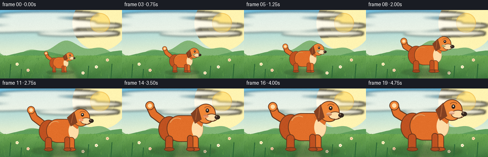
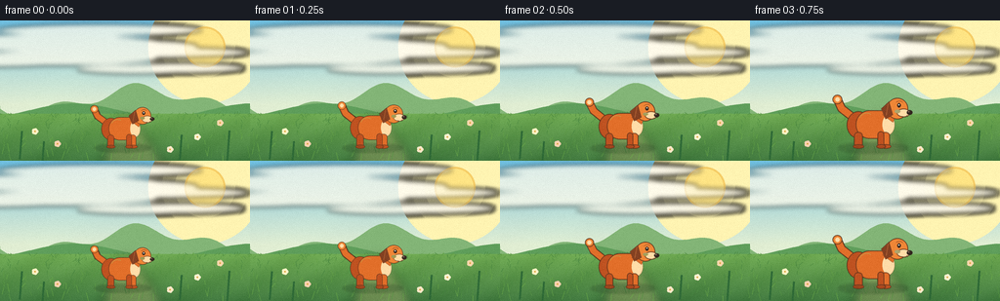
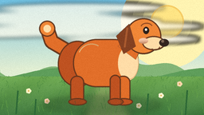
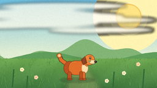

CODING AGENTS AS PIXEL WORLD MODELS
traex/DeepSeek-V4.1-Flash · instance_preservation_0047
点击播放 · 原生 RGB 像素
逐轮保存的候选
回放视频、检查图与代码变化。
每份候选均可单独播放。实际图片检查记录在下方工具轨迹中。
候选 01播放与检查图
点击播放 · 原生 RGB 像素

展开代码变化
--- 上一保存版本
+++ 本次保存版本
@@ -0,0 +1,517 @@
+"""Generate a five-second animated shot of an orange dog growing larger."""
+
+from __future__ import annotations
+
+import math
+from pathlib import Path
+
+import numpy as np
+from PIL import Image, ImageDraw, ImageFilter
+
+from artifact_io import save
+
+
+CASE_DIR = Path(__file__).resolve().parent
+WIDTH, HEIGHT, FRAME_COUNT = 256, 144, 20
+SS = 4
+W, H = WIDTH * SS, HEIGHT * SS
+
+
+def lerp(a: float, b: float, t: float) -> float:
+ return a + (b - a) * t
+
+
+def mix(c1: tuple[int, int, int], c2: tuple[int, int, int], t: float) -> tuple[int, int, int]:
+ return tuple(round(lerp(a, b, t)) for a, b in zip(c1, c2))
+
+
+def rounded_ellipse(draw: ImageDraw.ImageDraw, box, fill, outline=None, width=1):
+ draw.ellipse(box, fill=fill, outline=outline, width=width)
+
+
+def make_background() -> Image.Image:
+ """Paint a warm, softly textured meadow at supersampled resolution."""
+ yy = np.linspace(0.0, 1.0, H, dtype=np.float32)[:, None]
+ xx = np.linspace(0.0, 1.0, W, dtype=np.float32)[None, :]
+
+ sky_top = np.array([113, 192, 225], dtype=np.float32)
+ sky_bottom = np.array([225, 238, 211], dtype=np.float32)
+ blend = np.clip((yy - 0.02) / 0.58, 0, 1) ** 0.8
+ rgb = np.empty((H, W, 3), dtype=np.float32)
+ rgb[:] = sky_top[None, None, :] * (1 - blend[..., None]) + sky_bottom[None, None, :] * blend[..., None]
+
+ # Gentle diagonal bands make the sky feel illustrated rather than synthetic.
+ wave = 0.5 + 0.5 * np.sin(xx * 15.0 + yy * 9.0)
+ rgb += (wave[..., None] - 0.5) * np.array([2.0, 2.5, 1.2], dtype=np.float32)
+ image = Image.fromarray(np.clip(rgb, 0, 255).astype(np.uint8), "RGB").convert("RGBA")
+ draw = ImageDraw.Draw(image, "RGBA")
+
+ # Sun and a loose halo.
+ sx, sy = int(W * 0.82), int(H * 0.19)
+ for radius, alpha in [(58 * SS, 20), (44 * SS, 32), (31 * SS, 54)]:
+ draw.ellipse((sx - radius, sy - radius, sx + radius, sy + radius), fill=(255, 244, 178, alpha))
+ draw.ellipse(
+ (sx - 21 * SS, sy - 21 * SS, sx + 21 * SS, sy + 21 * SS),
+ fill=(255, 229, 133, 255),
+ outline=(246, 205, 103, 255),
+ width=2 * SS,
+ )
+
+ # A few long, soft clouds.
+ cloud_layer = Image.new("RGBA", (W, H), (0, 0, 0, 0))
+ cd = ImageDraw.Draw(cloud_layer)
+ clouds = [
+ (0.10, 0.20, 1.10, 0.055),
+ (0.40, 0.11, 0.82, 0.040),
+ (0.63, 0.27, 0.72, 0.036),
+ ]
+ for cx, cy, length, thick in clouds:
+ x0, y0 = int(cx * W), int(cy * H)
+ rx, ry = int(length * W * 0.5), int(thick * H)
+ for dx, dy, scale in [(-0.24, 0.08, 0.66), (0.0, -0.04, 1.0), (0.24, 0.07, 0.72)]:
+ ex, ey = int(x0 + dx * rx), int(y0 + dy * H)
+ ew, eh = int(rx * scale), int(ry * (0.8 + 0.3 * scale))
+ cd.ellipse((ex - ew, ey - eh, ex + ew, ey + eh), fill=(255, 251, 235, 190))
+ cloud_layer = cloud_layer.filter(ImageFilter.GaussianBlur(2.4 * SS))
+ image.alpha_composite(cloud_layer)
+ draw = ImageDraw.Draw(image, "RGBA")
+
+ # Distant hills.
+ far_hills = []
+ for x in range(-4 * SS, W + 4 * SS, 2 * SS):
+ y = 0.57 * H + 12 * SS * math.sin(x / W * math.pi * 2.2 + 0.8)
+ y += 6 * SS * math.sin(x / W * math.pi * 6.5)
+ far_hills.append((x, int(y)))
+ far_poly = [(0, H), (0, far_hills[0][1])] + far_hills + [(W, H)]
+ draw.polygon(far_poly, fill=(131, 181, 119, 255))
+
+ near_hills = []
+ for x in range(-4 * SS, W + 4 * SS, 2 * SS):
+ y = 0.64 * H + 7 * SS * math.sin(x / W * math.pi * 2.8 + 2.1)
+ near_hills.append((x, int(y)))
+ near_poly = [(0, H), (0, near_hills[0][1])] + near_hills + [(W, H)]
+ draw.polygon(near_poly, fill=(95, 158, 91, 255))
+
+ # Meadow with subtle color variation.
+ meadow_top = int(0.665 * H)
+ meadow = np.zeros((H - meadow_top, W, 3), dtype=np.float32)
+ gy = np.linspace(0.0, 1.0, H - meadow_top, dtype=np.float32)[:, None, None]
+ base_top = np.array([112, 171, 83], dtype=np.float32)
+ base_bottom = np.array([65, 121, 63], dtype=np.float32)
+ meadow[:] = base_top * (1 - gy) + base_bottom * gy
+ gx = np.linspace(0.0, 1.0, W, dtype=np.float32)[None, :, None]
+ meadow += np.sin(gx * 23.0 + gy * 7.0) * 3.5
+ meadow_img = Image.fromarray(np.clip(meadow, 0, 255).astype(np.uint8), "RGB")
+ image.paste(meadow_img, (0, meadow_top))
+ draw = ImageDraw.Draw(image, "RGBA")
+
+ # Soft path behind the dog creates a stable stage for the growth action.
+ path = Image.new("RGBA", (W, H), (0, 0, 0, 0))
+ pd = ImageDraw.Draw(path)
+ pd.polygon(
+ [
+ (int(0.41 * W), H),
+ (int(0.48 * W), int(0.68 * H)),
+ (int(0.53 * W), int(0.68 * H)),
+ (int(0.65 * W), H),
+ ],
+ fill=(201, 180, 123, 78),
+ )
+ path = path.filter(ImageFilter.GaussianBlur(5 * SS))
+ image.alpha_composite(path)
+ draw = ImageDraw.Draw(image, "RGBA")
+
+ # Grass strokes: dense near the bottom, sparse in the distance.
+ rng = np.random.default_rng(7)
+ for _ in range(310):
+ x = int(rng.uniform(0, W))
+ depth = rng.random() ** 1.6
+ y = int(lerp(0.67 * H, 1.01 * H, depth))
+ length = int(lerp(2.5, 8.0, depth) * SS * rng.uniform(0.65, 1.25))
+ lean = int(rng.uniform(-3, 4) * SS)
+ color = mix((72, 133, 65), (113, 175, 74), rng.random() * (0.7 + 0.3 * depth))
+ draw.line((x, y, x + lean, y - length), fill=(*color, 145), width=max(1, int(SS * 0.55)))
+
+ # Tiny flowers add scale without stealing attention from the dog.
+ for x, y, color in [
+ (0.14, 0.79, (255, 242, 196)),
+ (0.23, 0.88, (255, 210, 177)),
+ (0.79, 0.83, (255, 243, 209)),
+ (0.88, 0.73, (250, 215, 172)),
+ (0.68, 0.92, (255, 233, 200)),
+ ]:
+ fx, fy = int(x * W), int(y * H)
+ r = int(1.9 * SS)
+ for ang in range(0, 360, 72):
+ ox = int(math.cos(math.radians(ang)) * r)
+ oy = int(math.sin(math.radians(ang)) * r)
+ draw.ellipse((fx + ox - r, fy + oy - r, fx + ox + r, fy + oy + r), fill=(*color, 220))
+ draw.ellipse((fx - r // 2, fy - r // 2, fx + r // 2, fy + r // 2), fill=(218, 161, 60, 255))
+
+ return image
+
+
+def dog_points(cx: float, ground_y: float, s: float) -> dict[str, tuple[float, float]]:
+ """Canonical side-view dog landmarks in screen coordinates."""
+ return {
+ "hip": (cx - 20 * s, ground_y - 43 * s),
+ "chest": (cx + 21 * s, ground_y - 46 * s),
+ "neck": (cx + 30 * s, ground_y - 62 * s),
+ "head": (cx + 42 * s, ground_y - 72 * s),
+ "muzzle": (cx + 60 * s, ground_y - 65 * s),
+ "nose": (cx + 67 * s, ground_y - 66 * s),
+ "front_foot": (cx + 25 * s, ground_y),
+ "back_foot": (cx - 25 * s, ground_y),
+ "tail_base": (cx - 36 * s, ground_y - 51 * s),
+ }
+
+
+def draw_dog(base: Image.Image, cx: float, ground_y: float, s: float, phase: float) -> Image.Image:
+ """Draw one coherent dog character with a gentle breathing/wagging pose."""
+ layer = Image.new("RGBA", (W, H), (0, 0, 0, 0))
+ d = ImageDraw.Draw(layer, "RGBA")
+ p = dog_points(cx, ground_y, s)
+ bob = math.sin(phase * math.tau) * 0.75 * s
+ wag = math.sin(phase * math.tau + 0.5)
+
+ outline = (104, 55, 29, 255)
+ orange = (226, 111, 42, 255)
+ orange_light = (240, 135, 55, 255)
+ orange_dark = (191, 82, 33, 255)
+ cream = (255, 221, 168, 255)
+ cream_shadow = (232, 185, 128, 255)
+ brown = (132, 65, 34, 255)
+ line_w = max(1, int(1.45 * s))
+
+ # Contact shadow stays anchored while the dog grows.
+ shadow_w = 63 * s
+ shadow_h = 9.5 * s
+ shadow = Image.new("RGBA", (W, H), (0, 0, 0, 0))
+ sd = ImageDraw.Draw(shadow)
+ sd.ellipse(
+ (cx - shadow_w, ground_y - shadow_h, cx + shadow_w, ground_y + shadow_h),
+ fill=(38, 68, 37, 72),
+ )
+ shadow = shadow.filter(ImageFilter.GaussianBlur(2.3 * s))
+ layer.alpha_composite(shadow)
+ d = ImageDraw.Draw(layer, "RGBA")
+
+ # Curling tail, painted behind the body.
+ tail_base = (cx - 33 * s, ground_y - 54 * s + bob)
+ tail_mid = (
+ cx - 55 * s - 2 * wag * s,
+ ground_y - 69 * s - 4 * wag * s + bob,
+ )
+ tail_tip = (
+ cx - 61 * s - 4 * wag * s,
+ ground_y - 84 * s - 6 * wag * s + bob,
+ )
+ d.line(
+ [tail_base, tail_mid, tail_tip],
+ fill=outline,
+ width=int(16 * s),
+ joint="curve",
+ )
+ d.line(
+ [tail_base, tail_mid, tail_tip],
+ fill=orange,
+ width=int(12.5 * s),
+ joint="curve",
+ )
+ d.ellipse(
+ (
+ tail_tip[0] - 8.5 * s,
+ tail_tip[1] - 8.5 * s,
+ tail_tip[0] + 8.5 * s,
+ tail_tip[1] + 8.5 * s,
+ ),
+ fill=orange_light,
+ outline=outline,
+ width=line_w,
+ )
+ d.ellipse(
+ (
+ tail_tip[0] - 4.0 * s,
+ tail_tip[1] - 4.0 * s,
+ tail_tip[0] + 4.0 * s,
+ tail_tip[1] + 4.0 * s,
+ ),
+ fill=cream,
+ )
+
+ # Rear haunch and body.
+ d.ellipse(
+ (
+ cx - 47 * s,
+ ground_y - 67 * s + bob,
+ cx - 5 * s,
+ ground_y - 18 * s + bob,
+ ),
+ fill=orange_dark,
+ outline=outline,
+ width=line_w,
+ )
+ body_box = (
+ cx - 31 * s,
+ ground_y - 69 * s + bob,
+ cx + 38 * s,
+ ground_y - 18 * s + bob,
+ )
+ d.rounded_rectangle(body_box, radius=25 * s, fill=orange, outline=outline, width=line_w)
+
+ # Chest blaze.
+ d.ellipse(
+ (
+ cx + 17 * s,
+ ground_y - 61 * s + bob,
+ cx + 39 * s,
+ ground_y - 25 * s + bob,
+ ),
+ fill=cream,
+ )
+ d.arc(
+ (
+ cx + 18 * s,
+ ground_y - 60 * s + bob,
+ cx + 39 * s,
+ ground_y - 26 * s + bob,
+ ),
+ 265,
+ 98,
+ fill=cream_shadow,
+ width=max(1, int(s)),
+ )
+
+ # Back legs and front legs.
+ for foot_x, leg_color, leg_dark in [
+ (cx - 27 * s, orange_dark, (161, 70, 30, 255)),
+ (cx + 22 * s, orange, orange_dark),
+ ]:
+ d.rounded_rectangle(
+ (
+ foot_x - 7 * s,
+ ground_y - 30 * s + bob,
+ foot_x + 8 * s,
+ ground_y - 1 * s,
+ ),
+ radius=7 * s,
+ fill=leg_color,
+ outline=outline,
+ width=line_w,
+ )
+ d.ellipse(
+ (
+ foot_x - 9 * s,
+ ground_y - 7 * s,
+ foot_x + 11 * s,
+ ground_y + 1 * s,
+ ),
+ fill=leg_dark,
+ outline=outline,
+ width=line_w,
+ )
+
+ # Far front leg is darker and slightly offset for depth.
+ d.rounded_rectangle(
+ (
+ cx + 8 * s,
+ ground_y - 31 * s + bob,
+ cx + 20 * s,
+ ground_y - 1 * s,
+ ),
+ radius=6 * s,
+ fill=orange_dark,
+ outline=outline,
+ width=line_w,
+ )
+ d.ellipse(
+ (
+ cx + 6 * s,
+ ground_y - 7 * s,
+ cx + 23 * s,
+ ground_y + 1 * s,
+ ),
+ fill=(173, 74, 31, 255),
+ outline=outline,
+ width=line_w,
+ )
+
+ # Neck and head.
+ d.polygon(
+ [
+ (cx + 17 * s, ground_y - 61 * s + bob),
+ (cx + 34 * s, ground_y - 85 * s + bob),
+ (cx + 49 * s, ground_y - 76 * s + bob),
+ (cx + 36 * s, ground_y - 47 * s + bob),
+ ],
+ fill=orange,
+ outline=outline,
+ )
+ head_box = (
+ cx + 25 * s,
+ ground_y - 91 * s + bob,
+ cx + 63 * s,
+ ground_y - 53 * s + bob,
+ )
+ d.ellipse(head_box, fill=orange_light, outline=outline, width=line_w)
+
+ # Floppy ear behind the head, with a small independent sway.
+ ear_sway = math.sin(phase * math.tau + 1.2) * 1.3 * s
+ ear = [
+ (cx + 29 * s, ground_y - 85 * s + bob),
+ (cx + 15 * s - ear_sway, ground_y - 72 * s + bob),
+ (cx + 23 * s - ear_sway, ground_y - 53 * s + bob),
+ (cx + 36 * s, ground_y - 61 * s + bob),
+ ]
+ d.polygon(ear, fill=brown, outline=outline)
+ d.line(
+ [(cx + 27 * s, ground_y - 81 * s + bob), (cx + 24 * s - ear_sway, ground_y - 60 * s + bob)],
+ fill=(171, 91, 48, 255),
+ width=max(1, int(2.0 * s)),
+ )
+
+ # Muzzle and nose.
+ d.ellipse(
+ (
+ cx + 43 * s,
+ ground_y - 72 * s + bob,
+ cx + 67 * s,
+ ground_y - 57 * s + bob,
+ ),
+ fill=cream,
+ outline=outline,
+ width=line_w,
+ )
+ d.ellipse(
+ (
+ cx + 61 * s,
+ ground_y - 69 * s + bob,
+ cx + 71 * s,
+ ground_y - 61 * s + bob,
+ ),
+ fill=(51, 37, 30, 255),
+ )
+ d.ellipse(
+ (
+ cx + 63 * s,
+ ground_y - 68 * s + bob,
+ cx + 66 * s,
+ ground_y - 65 * s + bob,
+ ),
+ fill=(127, 103, 85, 255),
+ )
+
+ # Mouth, eye, eyebrow and a warm cheek.
+ d.arc(
+ (
+ cx + 51 * s,
+ ground_y - 66 * s + bob,
+ cx + 62 * s,
+ ground_y - 57 * s + bob,
+ ),
+ 12,
+ 132,
+ fill=(105, 60, 36, 255),
+ width=max(1, int(1.2 * s)),
+ )
+ eye_x, eye_y = cx + 47 * s, ground_y - 78 * s + bob
+ d.ellipse(
+ (eye_x - 3.2 * s, eye_y - 3.8 * s, eye_x + 3.2 * s, eye_y + 3.8 * s),
+ fill=(44, 32, 26, 255),
+ )
+ d.ellipse(
+ (eye_x - 1.4 * s, eye_y - 2.1 * s, eye_x + 1.0 * s, eye_y + 0.3 * s),
+ fill=(255, 250, 232, 255),
+ )
+ d.arc(
+ (
+ cx + 41 * s,
+ ground_y - 86 * s + bob,
+ cx + 54 * s,
+ ground_y - 77 * s + bob,
+ ),
+ 195,
+ 340,
+ fill=(140, 70, 34, 255),
+ width=max(1, int(1.1 * s)),
+ )
+ d.ellipse(
+ (
+ cx + 39 * s,
+ ground_y - 70 * s + bob,
+ cx + 49 * s,
+ ground_y - 64 * s + bob,
+ ),
+ fill=(241, 139, 92, 95),
+ )
+
+ # Toe marks and a few short fur accents.
+ for fx in (cx - 27 * s, cx + 10 * s, cx + 22 * s):
+ d.line(
+ [(fx - 2 * s, ground_y - 4 * s), (fx - 1 * s, ground_y - 1 * s)],
+ fill=(112, 57, 30, 210),
+ width=max(1, int(0.8 * s)),
+ )
+ d.arc(
+ (
+ cx - 26 * s,
+ ground_y - 64 * s + bob,
+ cx + 4 * s,
+ ground_y - 33 * s + bob,
+ ),
+ 205,
+ 300,
+ fill=(247, 158, 73, 155),
+ width=max(1, int(1.2 * s)),
+ )
+
+ layer = layer.filter(ImageFilter.GaussianBlur(0.18 * SS))
+ base.alpha_composite(layer)
+ return base
+
+
+def render_frame(index: int, background: Image.Image) -> np.ndarray:
+ t = index / (FRAME_COUNT - 1)
+ # Smooth acceleration, a small pause in the middle, then a confident finish.
+ grow = 0.5 - 0.5 * math.cos(math.pi * (0.12 + 0.88 * t))
+ grow = grow ** 0.88
+ scale = lerp(0.42, 1.18, grow)
+
+ frame = background.copy()
+ cx = W * lerp(0.49, 0.50, grow)
+ ground = H * 0.91
+ phase = t * 1.8
+ frame = draw_dog(frame, cx, ground, scale * SS, phase)
+
+ # Light foreground grass overlaps the paws very slightly and adds depth.
+ draw = ImageDraw.Draw(frame, "RGBA")
+ for x, y, length in [
+ (0.08, 0.99, 0.075),
+ (0.17, 1.01, 0.055),
+ (0.72, 0.99, 0.065),
+ (0.91, 1.00, 0.080),
+ ]:
+ px, py = int(x * W), int(y * H)
+ draw.line(
+ (px, py, px + int(length * W * 0.12), py - int(length * H * 2.7)),
+ fill=(47, 106, 55, 185),
+ width=2 * SS,
+ )
+
+ # Fine film grain, fixed per frame to keep the image clean but tactile.
+ small = frame.convert("RGB").resize((WIDTH, HEIGHT), Image.Resampling.LANCZOS)
+ rng = np.random.default_rng(101 + index)
+ grain = rng.normal(0.0, 1.8, (HEIGHT, WIDTH, 1)).repeat(3, axis=2)
+ rgb = np.clip(np.asarray(small, dtype=np.float32) + grain, 0, 255).astype(np.uint8)
+ return rgb
+
+
+def main() -> None:
+ background = make_background()
+ frames = np.stack([render_frame(i, background) for i in range(FRAME_COUNT)])
+ save(frames, CASE_DIR)
+ print(f"Saved {len(frames)} frames to {CASE_DIR}")
+
+
+if __name__ == "__main__":
+ main()
候选 02播放与检查图
点击播放 · 原生 RGB 像素


展开代码变化
--- 上一保存版本
+++ 本次保存版本
@@ -43,7 +43,7 @@
# Gentle diagonal bands make the sky feel illustrated rather than synthetic.
wave = 0.5 + 0.5 * np.sin(xx * 15.0 + yy * 9.0)
rgb += (wave[..., None] - 0.5) * np.array([2.0, 2.5, 1.2], dtype=np.float32)
- image = Image.fromarray(np.clip(rgb, 0, 255).astype(np.uint8), "RGB").convert("RGBA")
+ image = Image.fromarray(np.clip(rgb, 0, 255).astype(np.uint8)).convert("RGBA")
draw = ImageDraw.Draw(image, "RGBA")
# Sun and a loose halo.
@@ -101,7 +101,7 @@
meadow[:] = base_top * (1 - gy) + base_bottom * gy
gx = np.linspace(0.0, 1.0, W, dtype=np.float32)[None, :, None]
meadow += np.sin(gx * 23.0 + gy * 7.0) * 3.5
- meadow_img = Image.fromarray(np.clip(meadow, 0, 255).astype(np.uint8), "RGB")
+ meadow_img = Image.fromarray(np.clip(meadow, 0, 255).astype(np.uint8))
image.paste(meadow_img, (0, meadow_top))
draw = ImageDraw.Draw(image, "RGBA")
可观测工具轨迹
实际执行的命令与返回图片。
命令 1exit 0
/bin/bash -c "sed -n '1,240p' prompt.txt"
命令 2exit 0
/bin/bash -c "sed -n '1,280p' GENERATION_RULES.md"
命令 3exit 0
/bin/bash -c 'cat task_spec.json'
命令 4exit 0
/bin/bash -c "find . -maxdepth 2 -type f -printf '%p\\n' | sort | sed -n '1,240p'"
命令 5exit 0
/bin/bash -c "sed -n '1,280p' artifact_io.py"
命令 6exit 1
/bin/bash -c 'python generate.py'
命令 7exit 1
/bin/bash -c 'python generate.py'
命令 8exit 1
/bin/bash -c 'python generate.py'
命令 9exit 0
/bin/bash -c 'python generate.py'
命令 10exit 0
/bin/bash -c "python generate.py && python - <<'PY'
from pathlib import Path
import json
import numpy as np
from PIL import Image
spec = json.loads(Path('task_spec.json').read_text())
frames = sorted(Path('frames').glob('*.png'))
assert len(frames) == spec['frames'] == 20
arr = np.stack([np.asarray(Image.open(p).convert('RGB')) for p in frames])
assert arr.shape == (20, 144, 256, 3) and arr.dtype == np.uint8
assert (arr.min(axis=(1,2,3)) >= 0).all()
mean_delta = np.abs(np.diff(arr.astype(np.int16), axis=0)).mean()
print('frames', arr.shape, 'fps', spec['fps'], 'mean frame delta', round(float(mean_delta), 3))
print('size bytes', Path('pixels.npz').stat().st_size, Path('index.html').stat().st_size)
PY"命令 11exit 0
/bin/bash -c 'ls -lh generate.py pixels.npz index.html inspection.png transition_check.png frames/00.png frames/19.png'
视觉工具实际返回图片 1

视觉工具实际返回图片 2

视觉工具实际返回图片 3

视觉工具实际返回图片 4

保存候选 2 份；完成命令 11 次；可验证图片返回 4 张。原始 API 响应与完整日志保留在本地。